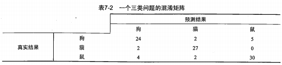
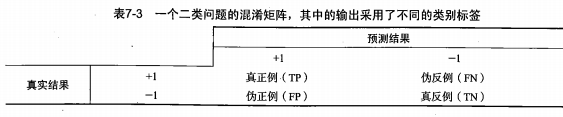
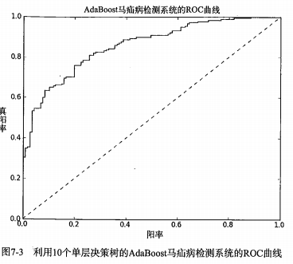
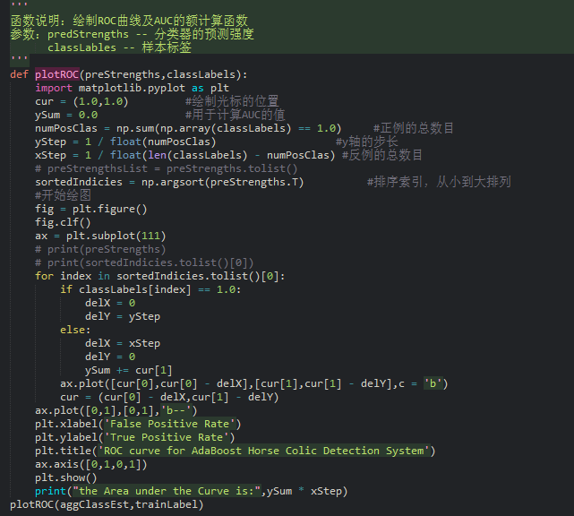
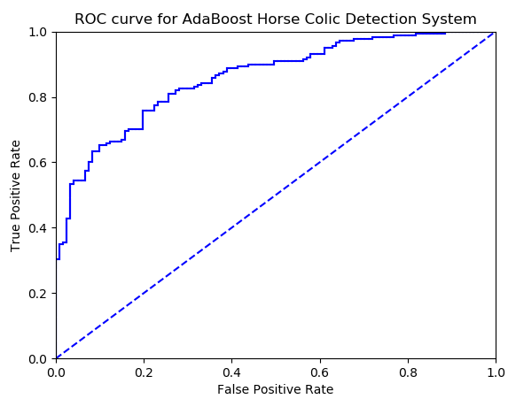

Blog
Blog
非均衡分类问题
一、问题背景到目前为止，我们已经学习了好几个分类算法，但是在所有的分类算法中，我们假设所有的分类代价是一样的。
例如在得疝病马的存活率的时候，我们只构建了分类器，但对分类之后的结果没有任何处理。如果预测的存活率很低，
那么对这匹马的后续工作就是让其安乐死，但我们的分类器只有 80% 的精确率，万一我们预测错误，我们就会错杀它。
对于这种分类代价不同的问题，我们提出一种新的分类器性能考察方法。
二、混淆矩阵
我们总是通过错误率来衡量之前的分类器性能，错误率是指所有样本中被分类错误样本的数量，这样一来便掩盖了样本
如何被错分的事实。但混淆矩阵可以帮助人们更好的理解分类中的错误。
1. 一个三类问题的混淆矩阵

根据上图，我们可以看出，对于一个分类器来说，如果除了其对角线元素以外，其他值全为 0，就会得到一个完美的分类器。
2. 一个二分类问题的混淆矩阵

在二分类问题中，如果将一个正例判为一个正例，就可以认为产生了一个真正例(True Positive， TP， 真阳)；
如果将一个反例判为一个反例，就可以认为产生了一个真反例(True Negative， TN， 真阴)；
如果将一个正例误判为一个反例，就可以认为产生了伪反例(False Negative，FN，假阴)；
如果将一个反例误判为一个正例，就可以认为产生了伪正例(False True，FT，假阳)。
三、其他分类性能度量指标
1. 正确率
预测为正例的样本中真正为正例的比例，即 TP / (TP + FP);
2. 召回率
预测为正例的真正正例占所有真正正例的比例，即 TP / (TP + FN);
3. ROC 曲线

图中的横坐标是假阳率(即 FP / FP + TN)；纵坐标是真阳率(即 TP / TP + FN)；ROC 曲线反映的是当阈值变化时，
假阳率和真阳率的变化情况。左下角的点给出的是将所有样例判为反例的情况，右上角的点给出的是将所有点判为正例的情况；
虚线给出的是随机猜测的结果曲线。
在理想的情况下，分类器应该是处于左下角，这意味着分类器假阳率很低的同时还能获得较高的真阳率。
例如在邮件过滤系统中，这个分类器过滤了所有的垃圾邮件，但没有将任何的合法邮件判为垃圾邮件。
AUC
对不同的 ROC 曲线通过曲线下的面积 (AUC) 进行比较。AUC 给出的是分类器的平均性能值。
一个完美的分类器的 AUC 为 1，而随机分类器的 AUC 为 0.5。
四、绘制 ROC 曲线及 AUC 的计算函数

执行结果

完整代码
数据集下载